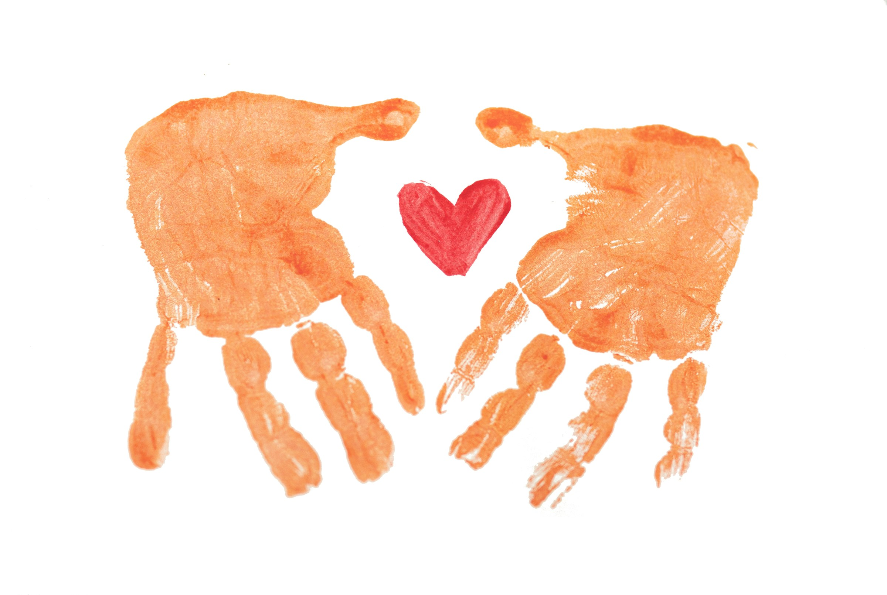

Alexis Chimdi Keke
Biotechnology, 200 Level
Co-Researcher and Writer
Development and Aid Access Center

PROJECT TEAM
Covenant University
Biotechnology, 200 Level
Co-Researcher and Writer
Computer Science, 200 Level
Website Developer & Writer
Computer Science, 200 Level
Website Developer
Computer Science, 200 Level
Lead Researcher and Writer
Biochemistry, 200 Level
Reviewer
Biochemistry, 200 Level
Reviewer
Across Nigeria, numerous government, NGO, and development programmes exist to support people facing economic hardship. However, the existence of these programmes does not guarantee that the people who need them can find or access them. Information is often scattered across different platforms and social media, creating a gap between resources and the people they are intended for.
So, we thought of a simple idea to counter this problem. DAAC is a platform designed to bridge this gap by matching individuals with programmes based on their circumstances, needs, and goals. Users provide basic information about themselves and their situation (e.g., location, occupation, income range, household size, details about a farm or business). DAAC compares their profile with available programmes and presents relevant opportunities, including requirements, benefits, and application processes.
Artificial intelligence supports information collection, speech and language processing, profile creation, and programme matching. AI does not make final eligibility decisions; instead, organizations determine eligibility based on each programme's requirements. To reach users with limited internet access or digital illiteracy, the platform is designed to become accessible through channels such as websites, USSD, SMS and voice-based services.
Rather than focusing solely on short-term relief, DAAC connects individuals to longer-term opportunities in agriculture, education, employment, finance, and entrepreneurship. The platform can begin as a low-cost prototype and scale through partnerships with government agencies, NGOs, development organizations, and research institutions. The goal of DAAC is to make support more accessible and help households sustain better livelihoods, thereby reducing poverty.
Executive Summary word count: words
The poverty rate in Nigeria stands at approximately 62% to 63% (Vanguard). That is roughly 140 million people out of the Nigerian population living in poverty.
In 2024 alone, Nigeria had 191,278 registered non-governmental organizations (NGOs) according to official data from the Corporate Affairs Commission (Guardian).
Not only in Nigeria but all over the world, governments, NGOs, organizations, and individuals set up forms of aid to improve livelihoods. But just because these initiatives exist does not mean they are accessible to the common person.
Many low-income families, farmers, and youths are not aware of opportunities that would benefit them. Information is scattered across various platforms, social media, websites, and channels, and specific programmes may not even be suitable for them.
DAAC aims to bridge the gap between these opportunities and people who need them by understanding individuals' situations based on the information they provide and matching them with appropriate programmes and resources to reduce poverty in the long run.
Based on the figures provided, the ratio of NGOs to people in poverty in Nigeria is approximately 1:737. Removing NGOs that are inactive or just on paper makes the ratio even wider. While these organizations may be able to help people, are they giving the right kind of help to those who need it?
Many local NGOs underperform because they come in with "pre-planned agendas." They roll out standard interventions without first mapping the exact demographic profile, needs, or pre-existing knowledge of the community. Therefore, they can't tailor their services to fit the community they're trying to help.
Development and upskilling programmes have different eligibility requirements and application processes, and their information is widely distributed. For people with low literacy, this could be a barrier to navigating these systems and applying to these opportunities, especially when criteria and information are buried in PDFs.
For organizations, while social media exists and physical campaigns can be done, finding the right individuals who can properly benefit from their programmes may be difficult. This presents the problem: resources are out there, but the connection between those who need it and those who provide them is almost nonexistent.
This was a landmark longitudinal study spanning 11 years by MIT and LSE economists which tracked 6,000 households in rural Bangladesh Source.
It revealed that poverty is not the product of a person's capabilities or attitudes but that the very poor are trapped because they lack initial access to productive assets or opportunities to clear a basic wealth threshold.
The study showed that by providing a one time resource (like a single cow) with training allowed impoverished women to shift from low wage labor to sustainable livestock rearing and land cultivation, permanently escaping the poverty trap.
To put it simply, the poor do not lack drive or ability, what they lack are the right opportunities. DAAC addresses this by bringing the right opportunities to thse who need them in a clear format that they can understand and simplifying the application process.
The Development and Aid Access Center is a platform that helps people find support programmes they qualify for. Nigeria already has numerous programmes for agriculture, training, employment, finance, business, and social support, but the information is often scattered across different organisations and platforms. For someone looking for help, knowing what is available can be difficult.
The idea is simple: tell us a little about your situation, and we'll help you find programmes that may fit. A user could provide their state or LGA, age, occupation, income range, household size, and, where relevant, information about their farm or business. We then compare that profile with information from verified programmes and show the user relevant options, including their requirements, what they offer, and how to apply.
For those without constant electricity, this process can be carried out using a USSD code or a phone line for those who can't write. The user enters the code and is prompted to provide their location, needs, situation, and other details. Alternatively, callers to the helpline are prompted to select their language and then speak. The information provided would be logged in our systems.
AI is then used to search our database of registered programmes for those that users qualify for and that closely suit their needs, and to deliver the results by text. Users would also have the option to send a USSD code for the programme they are most interested in. They could opt in to receive ongoing notifications when new opportunities arise. A website would also be available for those who are more digitally literate.
If the platform is widely used, it can serve as a data collection channel for organizations and support programmes, helping them gain better information about demographic needs.
Artificial intelligence is part of the platform's data collection, speech translation, information extraction, and programme matching. However, it does not make final eligibility decisions. Matching itself will use the requirements set by each programme and their staff (if the programme requires it).
We're not planning to build a short-term relief solution that provides only handout packages, food aid, and distribution. We plan to build a self-sustaining system where individuals can be matched with programmes that will train them in different areas, such as farming and agriculture, trading and vocations, education, and more. After all, "Give a man a fish, and you feed him for a day; teach a man to fish, and you feed him for a lifetime."
For scalability, we're looking at two deciding factors: Can this work beyond the prototype? And can it keep operating without becoming too expensive or dependent on us or the development team?
The system would initially be piloted with a small number of programmes in targeted communities. Once the pilot has been validated, feedback collected, and improvements made, it can then be expanded to additional programmes and states, and eventually to other countries facing similar challenges.
One thing to note is that the system does not require organizations to replace their existing processes. Rather, it allows them to integrate the tools they already use for their programmes into our platform to improve beneficiary-to-program matching, identify gaps in outreach, and target available resources efficiently.
For beneficiary-to-program matching, AI would be used to create beneficiary profiles, identify patterns, flag possible barriers, and verify evidence. Programme staff or the organization itself would make the final decisions.
Long-term sustainability would come through partnerships with NGOs, government agencies, development organizations, and research institutions, along with a model where small organizations have access to basic monitoring tools and larger programmes pay for advanced analytics and reporting.
Before looking at the expected impact of the proposed solution, we must first consider the impact of education and support programmes on poverty alleviation.
The Innovations for Poverty Action Graduation Approach boosts household income by 32–45% and per capita consumption by 18–25%, as seen in evaluations across settings such as Uganda's refugee settlements. It generates a 40–88% increase in productive assets, such as livestock and land, and significantly increases savings and borrowing, with savings multiplying relative to comparison or near-poor groups.
Other programmes like this include:
The Kaduna State Ultra-Poor Graduation Program: Fully led by a state government, this is the first ultra-poor graduation initiative of its kind in West Africa. Coordinated through the Kaduna State Social Investment Program Agency (KATSIPA), it targets the state's most vulnerable households on the social register who earn less than $3 per day.
The BOMA Project REAP Model (Kenya): The Rural Entrepreneur Assessment Project (REAP) is a prominent, gender-focused poverty graduation model evaluated by researchers alongside IPA Kenya.
National Skills Training Strategy: A coordinated sub-program managed under the National Poverty Reduction with Growth Strategy (NPRGS) targets 5 million young Nigerians, offering intensive vocational, entrepreneurship, and digital empowerment packages to ensure market-driven graduation from extreme poverty.
These are programmes we might not have known about without our research. Some of their impact can be attributed to us should people be connected to them through our platform.
The DAAC platform is expected to alleviate poverty by increasing vulnerable people's access to suitable development and aid programmes. As a phone application, the platform is expected to reach vulnerable community members with phones (about 70% of the 133 million Nigerians living in poverty).
In the short term, we aim to improve access to poverty alleviation initiatives. In the medium term, we intend for the platform to serve as a reliable means for vulnerable populations to receive education, economic empowerment, and aid. In the long run, we expect DAAC to facilitate sustainable change by reducing poverty rates and serve as a data collection avenue for organization that need it for humanitarian purposes.
We intend to monitor and measure progress through survey forms, follow-up and feedback, and data from programmes and organizations, tracking impact over 3–12 months.
The pilot version will be a working prototype of a website built without a large upfront budget using free hosting, database, and AI/API tiers. This would be tested in a local environment to gain feedback and add improvements. WhatsApp, SMS and USSD can be added later on as the project scales. The downside is that the pilot version may not be scalable in very rural areas with low digital literacy in a website form.
Once testing is successful, the budget is estimated at ₦1–2.4 million for a team of two developers over roughly two months, with technical maintenance estimated at ₦150,000–₦600,000 per year.